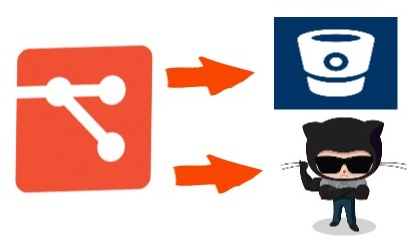

Lema: "El que no conoce su historia esta condenado a repetirla"
La historia de tu código

Git es un sistema de control de versiones diseñado para manejar proyectos muy grandes con velocidad y eficiencia, pero igual de apropiado para repositorios pequeños; es especialmente popular con la comunidad open source.
Git es un proyecto Open Source cubierto por la GNU General Public License v2. Originalmente escrito por Linus Torvalds y mantenido por Junio C Hamano.